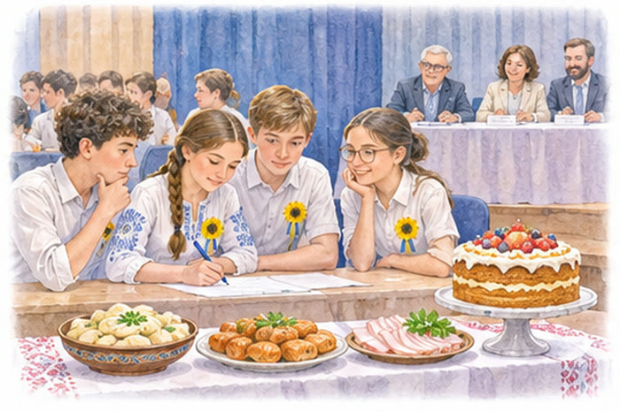

Listen to the text
Speed:

At the end of the unit our school organised a quiz night called "I Love Ukraine". Six teams from the eighth and ninth forms took part. Our team was called "The Sunflowers". I was the captain, which means that I was the most nervous. Round one was Geography. "Which river divides Ukraine into the Right Bank and the Left Bank?" Easy: the Dnipro. "What is the highest mountain?" Hoverla. "How many countries does Ukraine have borders with?" We wrote "seven". Correct! Round two was History. "When was independence proclaimed?" Everybody knew. "Who is the anthem's music written by?" We argued. Solomiia was sure: Mykhailo Verbytskyi. She was right. Round three was "Made in Ukraine". We had to name things that were invented or built here. We wrote: the plane "Mriia" and the famous helicopter designer Ihor Sikorskyi, who was born in Kyiv. The ninth form remembered the famous Christmas song "Shchedryk", which was written by Mykola Leontovych and is sung all over the world. Round four was the hardest: "Taste". We were given five dishes with our eyes closed and had to name the region. I recognised banosh from the Carpathians at once. My grandmother makes it. Before the last round we were in second place, one point behind the ninth form. The last question was for the captains only. "What does the word 'Ukraine' mean to you? One sentence." The other captain said, "It is my country." I said, "It is the place where I am always expected." The jury gave us an extra point. We shared the first place and the cake.
Tap any sentence to hear it again.
Сподобалось? На сайті ще більше матеріалів для вчителів!
Reader, презентації, ігри, діагностичні та контрольні роботи до підручників 1-11 класів.
Перейти на сайт materials.allaenglish.com